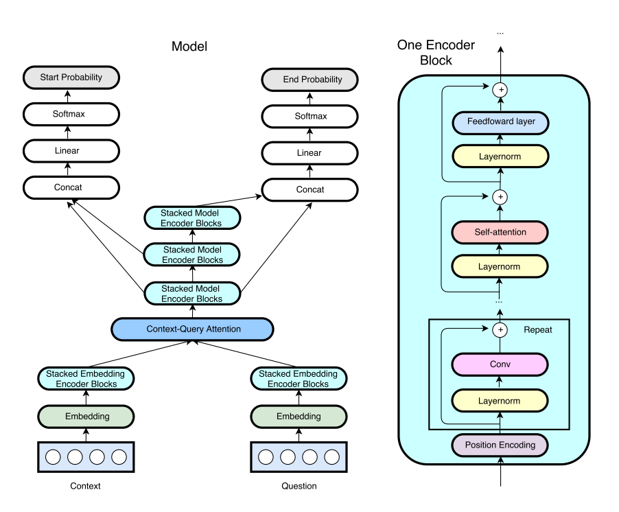
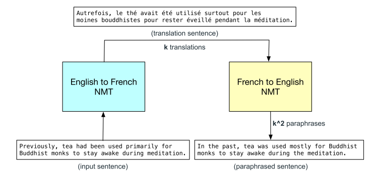
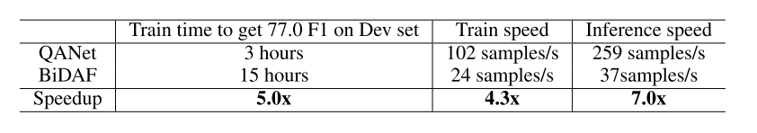

1. 背景介绍
QANet由CMU和Google brain联合提出，使用了CNN和self-attention来代替RNN进行编码，主要想要解决RNN的训练和推理速度都很慢的问题，训练很慢导致了很难应用到更大的数据集和快速迭代更新模型；推理慢导致了部署到对实习性要求高的系统出现困难。
2.亮点
使用CNN和self-attention代替了传统的RNN的编码模块，前馈特性大大提升了模型的训练和推理速度
提出了双向翻译进行数据增强的方法，这种方法较依赖于翻译器的质量。
3.模型

具体的结构如上图所示。
Input Embedding Layer
拼接word embedding和character embedding而成, word使用300维的Glove, character-level则使用CNN进行编码,两者拼接后通过highway network形成下一层的输入.
Embedding Encoder Layer
这一层则是QANet的核心结构, 使用了类似transformer的结构,不同的是添加了卷积层,利用卷积捕捉短距离信息融合, 利用self-attention捕捉长距离信息融合,这里使用的卷积是depthwise separable的卷积.
Context-Query Attention Layer
计算相似度矩阵, 对相似度归一化乘上context向量即得注意力值.
4. 其他
4.1 关于数据增强

数据增强依靠双向翻译来完成,较依赖于翻译器质量.
4.2 关于加速效果

QANet 的主要贡献就在于提出更快的编码结构,其较BiDAF的加速效果如上图所示.